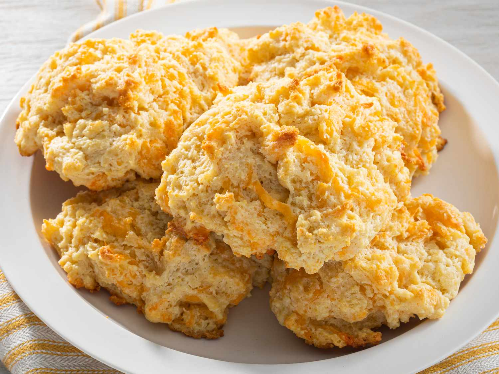

Red Lobster’s Cheddar Buscuits Recipe
(descriptive paragraph) Warm, flaky, buttery biscuits packed with sharp cheddar cheese and topped with a savory garlic-herb butter.
Ingredients
Sub-category
- All-purpose flour
- Baking powder
- Baking soda
- Salt
- Garlic powder
- Cold butter
- Sharp cheddar cheese, shredded
- Buttermilk
- Dried parsley
- Butter, melted (for brushing on top)
- Garlic powder (for topping)
Instructions
Sub-category
- Preheat the oven to 425°F(220°C) and line a baking sheet with parchment paper.
- Mix the dry ingredients: In a large bowl, combine 2 cups all-purpose flour, 1 tablespoon baking powder, ½ teaspoon bakng soda. 1 teaspoon garlic powder, and ½ teaspoon salt.
- Cut in the butter: Add ½ cup cold butter, cut into small pieces. Use a pastry cutter or your fingers to mix until the mixture resembles course crumbs.
- Add the cheese: Stir in 1½ cups shredded sharp cheddar cheese.
- Add the buttermilk: Pour in 1 cup cold buttermilk and gently stir until a soft, slightly sticky dough, forms. Dont overmix.
- Form the biscuits: Drop spoonfuls of dough onto the prepared baking sheet, leaving a little space between each biscuit.
- Bake: Bake for about 12-15 minutes, or until the biscuits are golden brown on top.
- Make the topping: Melt 2 tablespoons of butter and mix with ½ teaspoon garlic powder and 1 teaspoon dried parsley.
- Brush the biscuits: Immediately after remving the biscuits from the oven, generously brush the garlic-herbn butter over the tops.
- Serve warm: Let them cool for a couple of minutes, then enjoy while they’re warm and cheesy.